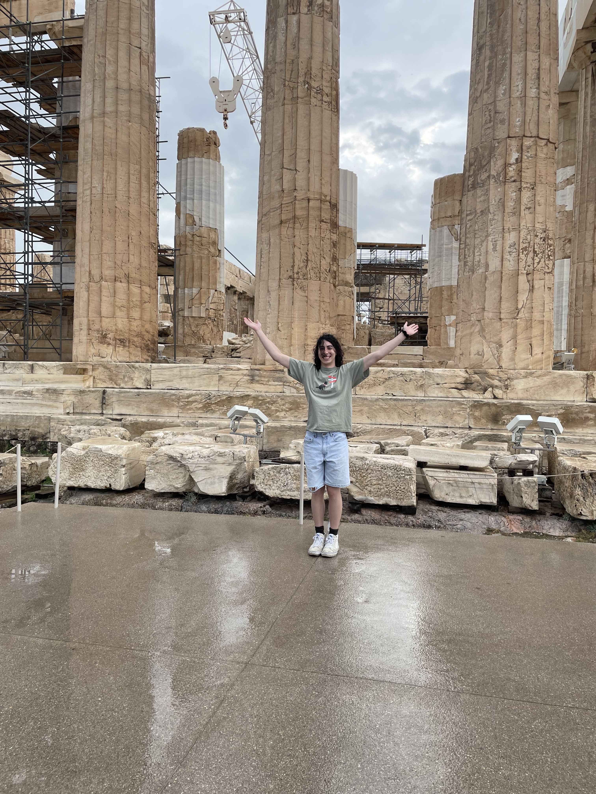

Introduction
Welcome to my blog for the Fall 2023 Wolverine Soft dev cycle. Here is where I will keep my notes from each sprint and what I worked on each week!
Blog 1 (9/24-10/8) - A Sprint from Greece
Introduction
This sprint was a hectic one, with me being in Greece for the entirety of the two weeks for my sister's wedding. However, it was still a blast to hop back into Multiply after working on it over the Summer!
Meetings (2.5 hours)
I attended the meeting at the beginning of the sprint where goals for the week were dicussed and initial tasks were assigned. Unfortunately, I was not able to attend the second meeting because of travel.
Exhaust System Improvements (2 hours)
At the beginning of this sprint, I worked on touching up the exhaust system I worked on at the end of the Summer. This system is responsible for ending the players turn automatically when they run out of possible actions. The system functions by counting up the number of units and cities a player has at the beginning of their turn. Each time a city or unit is exhausted the number of available unit is ticked down 1. When that number reaches zero, the turn ends
One shortcoming of my initial design of the system was that it only counted a unit as exhausted if it both moved and attacked. If a unit moved but had no enemies it could attack, it would not exhaust. Fixing this bug required me to dig through the documentation and code for units. While digging through, I found a function that someone implemented which would generate a list of all available enemies a unit could attack in its current square. Using this method, I was able to check for possible attacks after a unit moved. If there were no possible attacks, the unit would be exhausted.

Camera Panning (3 hours)
As maps get bigger, having a fixed camera position will become increasingly impractical. Having camera panning is an important feature to allows players to focus in on specific parts of the battlefield.
Implementing this feature required me to tie the translation of the camera position to the position of the mouse on the screen. This required me to research how to get the mouse position in Unity, and then how to figure out if the mouse is located on the edge of the screen. I also had to read through the grid spawner script to understand how to access the map size, since that would affect the bounds of the camera.
One problem I ran into came up while implementing the zoom. Since our camera uses orthographic projection, simply moving the camera will not create the desired zoom effect. After consulting the rest of the programming team, one suggestion made was to change the orthographic projection size, which did achieve the results I wanted.
Custom Room Options (1 hours)
My final task for the sprint was adding the custom room option to set the starting currency for each player. Implementing this feature required me to use Photon's custom room properties feature, which stores custom properties in a dictionary that can accessed by any players in the room. I then just had to add a selector to the room creation UI that would modify this value.
Documentation Review (2 hours)
Since I finished all my tasks quickly this week, I spent some extra free time reviewing the documentation for Project Multiply. I mainly looked into the Custom Serialization and Turn Game Manager systems since those are systems I will work with a lot in the future.
Conclusion
In total I spent 10.5 hours on Wolverine Soft this week. Unfortunately, this is under my required 18 hours per a week. This is mainly caused by me having not much free time since I was travelling. However, this week was also an indication that I should push myself more in the coming sprints to take on more tasks.